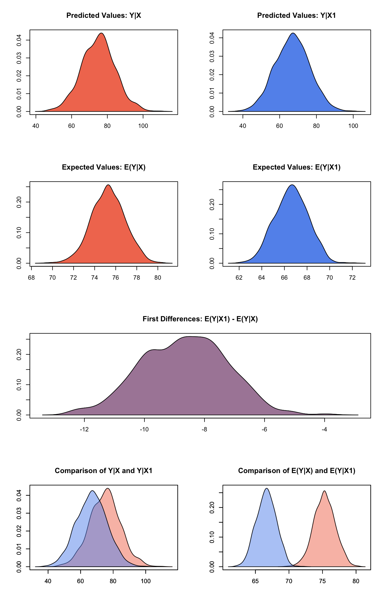
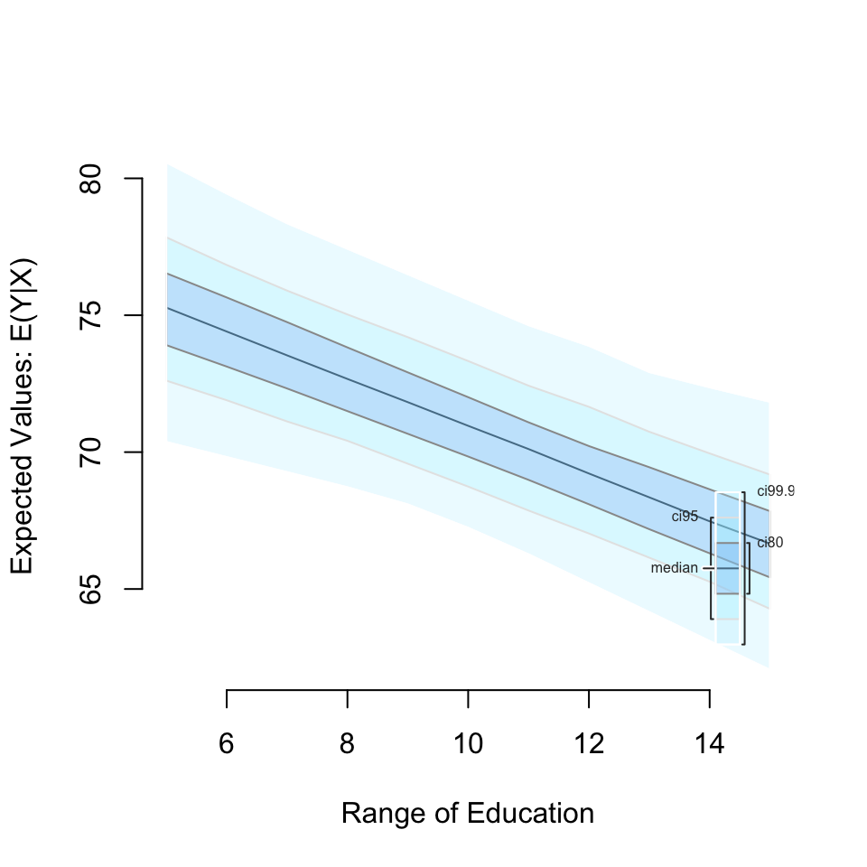

Built using Zelig version 5.1.1.90000
All models in Zelig can be estimated and results explored presented using four simple functions:
zelig to estimate the parameters,
setx to set fitted values for which we want to find quantities of interest,
sim to simulate the quantities of interest,
plot to plot the simulation results.
Zelig 5 introduced reference classes. These enable a different way of working with Zelig that is detailed in a separate vignette. Directlyusing the reference class architecture is optional.
Let’s walk through an example. This example uses the swiss dataset. It contains data on fertility and socioeconomic factors in Switzerland’s 47 French-speaking provinces in 1888 (Mosteller and Tukey, 1977, 549-551). We will model the effect of education on fertility, where education is measured as the percent of draftees with education beyond primary school and fertility is measured using the common standardized fertility measure (see Muehlenbein (2010, 80-81) for details).
If you haven’t already done so, open your R console and install Zelig. We recommend installing Zelig with the zeligverse package. This installs core Zelig and ancillary packages at once.
install.packages('zeligverse')Alternatively you can install the development version of Zelig with:
devtools::install_github('IQSS/Zelig')Once Zelig is installed, load it:
library(zeligverse)Let’s assume we want to estimate the effect of education on fertility. Since fertility is a continuous variable, least squares (ls) is an appropriate model choice. To estimate our model, we call the zelig() function with three two arguments: equation, model type, and data:
# load data
data(swiss)
# estimate ls model
z5_1 <- zelig(Fertility ~ Education, model = "ls", data = swiss, cite = FALSE)
# model summary
summary(z5_1)## Model:
##
## Call:
## z5$zelig(formula = Fertility ~ Education, data = swiss)
##
## Residuals:
## Min 1Q Median 3Q Max
## -17.036 -6.711 -1.011 9.526 19.689
##
## Coefficients:
## Estimate Std. Error t value Pr(>|t|)
## (Intercept) 79.6101 2.1041 37.836 < 2e-16
## Education -0.8624 0.1448 -5.954 3.66e-07
##
## Residual standard error: 9.446 on 45 degrees of freedom
## Multiple R-squared: 0.4406, Adjusted R-squared: 0.4282
## F-statistic: 35.45 on 1 and 45 DF, p-value: 3.659e-07
##
## Next step: Use 'setx' methodThe -0.86 coefficient on education suggests a negative relationship between the education of a province and its fertility rate. More precisely, for every one percent increase in draftees educated beyond primary school, the fertility rate of the province decreases 0.86 units. To help us better interpret this finding, we may want other quantities of interest, such as expected values or first differences. Zelig makes this simple by automating the translation of model estimates into interpretable quantities of interest using Monte Carlo simulation methods (see King, Tomz, and Wittenberg (2000) for more information). For example, let’s say we want to examine the effect of increasing the percent of draftees educated from 5 to 15. To do so, we set our predictor value using the setx() and setx1() functions:
# set education to 5 and 15
z5_1 <- setx(z5_1, Education = 5)
z5_1 <- setx1(z5_1, Education = 15)
# model summary
summary(z5_1)## setx:
## (Intercept) Education
## 1 1 5
## setx1:
## (Intercept) Education
## 1 1 15
##
## Next step: Use 'sim' methodAfter setting our predictor value, we simulate using the sim() method:
# run simulations and estimate quantities of interest
z5_1 <- sim(z5_1)
# model summary
summary(z5_1)##
## sim x :
## -----
## ev
## mean sd 50% 2.5% 97.5%
## 1 75.29341 1.610432 75.22922 72.33173 78.44749
## pv
## mean sd 50% 2.5% 97.5%
## [1,] 75.5754 9.426014 75.34182 58.18348 94.71067
##
## sim x1 :
## -----
## ev
## mean sd 50% 2.5% 97.5%
## 1 66.5779 1.510487 66.60971 63.62094 69.58567
## pv
## mean sd 50% 2.5% 97.5%
## [1,] 66.43159 9.459826 66.53182 48.92943 84.65102
## fd
## mean sd 50% 2.5% 97.5%
## 1 -8.715502 1.483011 -8.770645 -11.5115 -5.799865At this point, we’ve estimated a model, set the predictor value, and estimated easily interpretable quantities of interest. The summary() method shows us our quantities of interest, namely, our expected and predicted values at each level of education, as well as our first differences–the difference in expected values at the set levels of education.
Zelig’s plot() function plots the estimated quantities of interest:
plot(z5_1)
We can also simulate and plot simulations from ranges of simulated values:
z5_2 <- zelig(Fertility ~ Education, model = "ls", data = swiss, cite = FALSE)
# set Education to range from 5 to 15 at single integer increments
z5_2 <- setx(z5_2, Education = 5:15)
# run simulations and estimate quantities of interest
z5_2 <- sim(z5_2)Then use the plot() function as before:
z5_2 <- plot(z5_2)
The primary documentation for Zelig is available at: http://docs.zeligproject.org/articles/.
Within R, you can access function help using the normal ? function, e.g.:
If you are looking for details on particlar estimation model methods, you can also use the ? function. Simply place a z before the model name. For example, to access details about the logit model use: